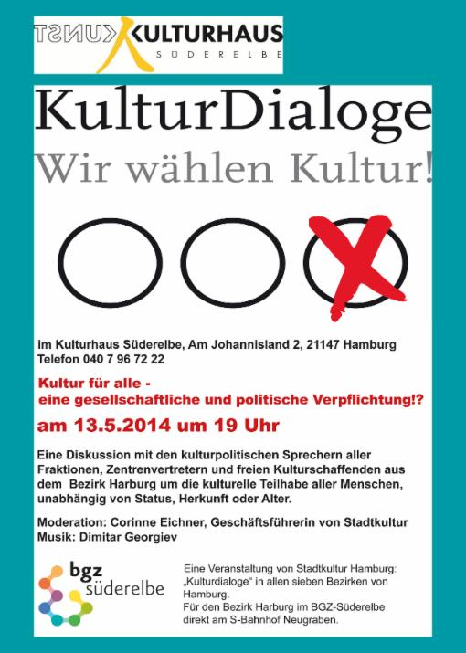

Am Dienstag, den 13. Mai, findet im Kulturhaus Süderelbe eine Veranstaltung statt, die in Neugraben ein absolutes Novum ist - der "KulturDialog", initiiert von Stadtkultur e.V. , dem Dachverband alle achtundzwanzig Stadtteilkulturzentren Hamburgs, zu denen auch unser Kulturhaus gehört.
In lockerer Diskussionsrunde sitzen Vertreter der stadtteilkulturellen Zentren aus dem Harburger Raum (von Alles wird schön aus Heimfeld, der KulturWerkstatt Harburg, dem Rieckhof und, natürlich, vom Kulturhaus Süderelbe), die kulturpolitischen Sprecher aller Fraktionen und freie Kulturschaffende aus Harburg, verbunden über den Verbund "Südkultur", zusammen.
Das Thema des Abends lautet: "Kultur für alle - eine gesellschaftliche und politische verpflichtung!?"
Alle sind eingeladen und wir freuen uns auf eine lebendige Diskussionsrunde!
